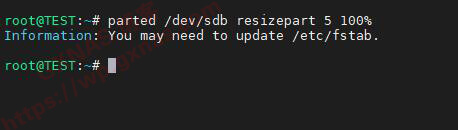

群晖-硬盘扩容
虚拟机加硬盘
PVE虚拟机添加硬盘容量
不过虚拟机增加后的硬盘容量并不会直接显示在NAS储存空间里，因此不能被直接使用。
SSH
在Win电脑上用MobaXterm或者Xshell等软件，以root用户登录到群晖的SSH下（如果你的群晖没开启root，那么可以参考《群晖6.2和6.2以上版本开启root的方法》的教程，给群晖开启root），敲一下命令查看存储硬盘名称：
1 | ls /dev/sd* |
10、我的群晖只有一个存储硬盘，这个存储硬盘的名称是/dev/sdb（如果你的不是这个名称，请自行修改下面的命令哦），还有/dev/sdb1、/dev/sdb2、/dev/sdb3和/dev/sdb5等4个分区，输入命令`
1 | fdisk /dev/sdb |
然后再输入p回车，查看一下各个分区情况：
1 | p |
11、可以看到/dev/sdb5显示是19.8G，就是这个存储硬盘了，输入quit 回车，退出查看；
]
12、输入命令，给存储池扩容（命令中的3，对应/dev/sdb3）：
1 | parted /dev/sdb resizepart 3 100% |
]
13、输入命令，给存储空间扩容（命令中的5，对应/dev/sdb5）：
1 | parted /dev/sdb resizepart 5 100% |
]
14、再次输入命令fdisk /dev/sdb 回车，然后再输入p回车，查看一下各个分区情况，可以看到/dev/sdb3和/dev/sdb5都扩容了：
15、输入quit 回车，退出查看，关闭SSH工具；
服务器扩容
回到群晖的存储管理器，存储空间1，就看到系统提示”检测到未使用的硬盘空间，请单击立即扩充以扩充此存储池“，点蓝色的”立即扩充“；
17、在”扩充存储空间1的容量“处打勾，下一步；
]
19、不一会，就扩充好了，存储池从19.8G变成了89.9G；
参考
群晖DSM系统的硬盘扩容教程 ：https://wp.gxnas.com/12777.html